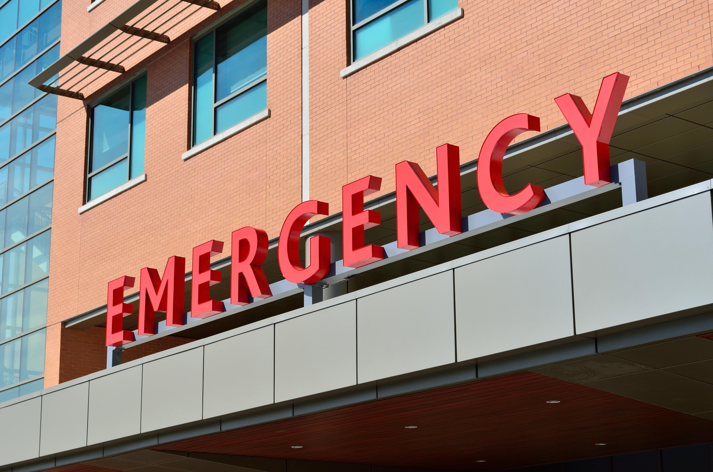

When should I rush to the hospital

Do not rush to the ER as soon as you are tested positive. Many people show mild symptoms for which one do not have to rush to the hospital. The symptoms are acute in some cases and with a week of quarantine or the isolation you can be tested negative and be back to your normal routine. But if one shows the following signs then we recommend to get medical help
- Trouble breathing
- Persistent pain or pressure in the chest
- New confusion
- Inability to wake or stay awake
- Pale, gray, or blue-colored skin, lips, or nail beds, depending on skin tone